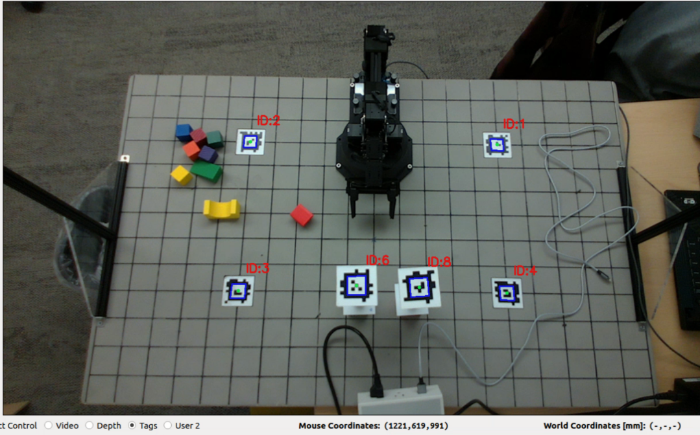

Checkpoint 2
Last Updated: Feb 26, 2024
Contents
Apriltag Calibration
In the previous checkpoint, we estimated the extrinsic parameters of the camera using physical measurements. In this checkpoint, we will use Apriltags on the board and their known locations instead to estimate the extrinsic parameters.
Intro
Apriltags are a commonly used fiducial system in robotics and computer vision. For information about Apriltags see here.
Each tag is a member of a family and has a specific ID. In order to have the tags detected in an image and the tag location published as a ROS message, the IDs of the tags you wish to detect must be in the configuration file. The default configuation file has these filled in already, so you will only need to change the configuration file if you want to detect a tag with an ID beyond 8.
If you wish to modify the Apriltag configuration, you will need to modify the tags_Standard41h12.yaml file in /install_scripts/config and copy it to /opt/ros/humble/share/apriltag_ros/cfg/, which is what we did during the setup guide, by running ./install_LaunchFiles.sh. This is a global config file so it will affect the settings of the current active user account. The tag’s family and ID are displayed on the tag sticker. You can refer to the sticker to check these details, especially when replacing the tag or using additional ones.
Once the AprilTag detection node is initiated, it detects all tags within the camera’s field of view and publishes ROS messages with details of the detection, including the tag’s ID and location. Next, let’s take a look at actual commands and their outputs.
- To determine the message type of the AprilTag detection topic
/detections, use the following command:$ ros2 topic type /detections- The message type is a data structure that describes the content of the message.
- The output will indicate that the topic type is
apriltag_msgs/msg/AprilTagDetectionArray. This is a specific data structure utilized for describing the tag detections and is defined by the package author.
- To check the details of this message type:
$ ros2 interface show apriltag_msgs/msg/AprilTagDetectionArray- The output would be something like this:
std_msgs/Header header builtin_interfaces/Time stamp int32 sec uint32 nanosec string frame_id AprilTagDetection[] detections string family int32 id int32 hamming float32 goodness float32 decision_margin Point centre # float64 x float64 y Point[4] corners # float64 x float64 y float64[9] homography #
- The output would be something like this:
- To check the actual value of the message:
$ ros2 topic echo /detections - To learn more about ros2 humble topic commands, check the official docs.
Task 2.1 Validate the Apriltag Detection
In the control station GUI, you’ll find several views: Video, Depth, Tags, and User2. Your specific task involves the drawTagsInRGBImage() function in src/camera.py. This function requires you to use OpenCV to draw detections of AprilTags.
Key elements to include in your drawing are:
- The tag’s ID.
- A highlight on the tag’s center.
- The tag’s edges.
An example of the expected result is provided for reference: 
{kind=link}
While your result doesn’t have to be identical, the goal is to verify the accuracy of the detection. A good indication of accurate detection is if your drawing aligns well with the real-world objects. This alignment ensures the reliability of the AprilTag detection output.
Task 2.2 Camera Calibration Using GUI
Add a workspace calibration procedure. This procedure should be initiated by one of the user buttons in the GUI, integrated into the state machine as a calibration state.
The procedure will display status messages at the bottom of the GUI window, which will guide users through the calibration steps if you choose a manual or semi-automatic calibration. This button will not only find the extrinsic matrix, but also apply a projective transform to adjust the camera’s perspective.
Extrinsic Matrix
Similar to the extrinsic matrix you calculated before using measurements of the board, the Apriltags can be used to calculate an extrinsic matrix automatically. This is done with perspective n-point pose computation, which takes in known image coordinates (from the detector) and known world coordinates (from measuring the board). An example of how to do this is found in the solve_extrinsics.py script in the armlab_opencv_examples repo.
Homography
As you may have noticed, the camera is not facing directly down to the board but is at a position and orientation offset. In order to work with our workspace as if you were looking at it from above (which will be much more helpful for the future tasks), you’ll need to apply a projective transformation. To do this, you’ll first determine the homography matrix using reference points in the image frame, then apply the transform to change the perspective from the “trapezoid” to a rectangle. An example of doing this on the image plane is given in the homography_transform.py script in the armlab_opencv_examples repo.
The source points you use to compute the homography matrix should either be the corners of the board or the Apriltag positions. If you choose Apriltag positions, you already have those pixel coordinates from the detector. If you choose to use the board corners, you know their world coordinates and you have the necessary information to transform those world coordinates into image coordinates using the intrinsic and extrinsic parameters. The destination points are ones that you choose yourself based on where you want the transformed points to be on the final image frame. As an example, you would want the transformed points to form a rectangle, while being spaced apart the right amount to not stretch the board.
Combined
After the calibration is performed, update the display under the video in the GUI to show the world coordinates of the mouse location as you hover over the video. Measurements only need to be valid for points on or above the board.
Hints:
- A manual calibration might go as follows (this is the “semi-automatic” calibration):
- Use mouse clicks to get pixel locations of known locations in the workspace. Repeat with the depth frame and use an affine transformation to register the two together if necessary.
- Using the intrinsic matrix you find for the RGB camera along with any depth calibration you determine, create a function that takes pixel coordinates from the image and returns world coordinates.
- Alternatively, you may implement an auto-calibration routine using Apriltags visible in the workspace, or possibly by detecting the grid in the image. This is the “automatic” calibration.
- Don’t forget to undo your homography transformation when you go from mouse coordinates to world coordinates.
1) Report your extrinsic matrix and depth calibration function.
2) Report the equations used to turn [u,v,d] coordinates in the image frames to [x,y,z] coordinates in the world frame.
3) Describe how you verified the calibration was correct, what additional steps you took to correct it, and provide evidence for the accuracy of your calibration.
Questions to consider:
1) How do the extrinsic matrices compare with the hand-measured ones?
2) What are the sources of error, and how large are they?
3) Is it sufficient to rely on this nominal matrix for finding points in the world?
Task 2.3 Validate the Calibration
After obtaining the calibration result, we need to validate the result.
Instructions:
- Project a grid of points onto the image. These points should correspond to the corners of the grid on your workspace.
- In
camera.py, you will find the variableself.grid_pointsdefining the world coordinates of your workspace’s grid corners. Use these for your projection. You should employ theprojectGridInRGBImage()function to project these grid points onto the image.
- In
- After projecting the grid points, to compare them to the actual corners of the workspace in the image, select the “User 2” radio box in the GUI, which activates the grid view. There’s no need to modify
control_station.pyfor this functionality as long as you implement theprojectGridInRGBImage()function correctly. - Finally, apply a perspective transform. This will change your image’s perspective to resemble a bird’s-eye view, providing a different angle of the workspace.
1) Quantitatively or qualitatively, assess your calibration routine using the grid point projection.
2) Which points did you use for your perspective transformation? Report the homography matrix.
Questions to consider:
What does each of the entries of your homography matrix represent?
Forward Kinematics
For this part, you will work on implementing Forward Kinematics to determine the location of the end effector in the global frame.
Intro
The objective of forward kinematics (FK) is to determine the position of the joints in the global frame, given the position of each of the joints in the robot frame. You can approach the implementation of the FK using either the Denavit-Hartenberg (DH) table or the Product of Exponentials (PoX). Please refer to the lecture slides for further details regarding these methods.
Regardless of the method used, you must use the geometry of the RX200 arm to utilize either of the FK methods. You can find the technical drawings of the RX200 arm for this purpose here.
To implement the forward kinematics, you will work with the kinematics.py script, which has helper functions with docstrings for either the DH table or the PoX approach. Either of these methods must take in the 5 joint angles of the RX200 arm and output the wrist location in the global coordinates.
One function (FK_DH) would use a DH table to determine the end effector position. The other (FK_PoX) would take screw vectors and an M-matrix and calculate the end effector position using the product of exponentials formulation. You will likely have to create helper functions to perform the FK calculations.
Task 2.4 Forward Kinematics
Refer to the technical drawing of the RX200 arm on the manufacturer’s website. You must implement one of two forward kinematics functions that take five joint angles and return the wrist location in workspace (global frame) coordinates.
The end effector position is defined by where the orientation uses the common ZYZ Euler angle convention. You should display the coordinates of the center of the gripper (End Effector) in your GUI using the text labels provided in the upper left.
1) Include a DH table or screw vectors and M matrix for the RX200 arm in your report.
2) Include a schematic of the arm with DH frames or screw vectors indicated
3) Describe how you verified that your arm tooltip achieved expected workspace coordinates for your test cases, estimate the error, and justify the accuracy of your measurements.
Checkpoint Submission
Part 1
- Rotate the camera, then demonstrate the calibration procedure in a video
- With the camera rotated, record the reported position (x,y,z) of the center of the top of a stack of large blocks placed at the following locations for a stack size of [0,1,2,4,6] blocks (total of 4x5=20 measurements):
- (0,175)
- (-300, -75)
- (300, -75)
- (300, 325)
Part 2
Record a video showing your Forward Kinematics results and arm positions while manually driving the end effector to the following positions:
- (0, 175, 100)
- (-300, -75, 25)
- (300, -75, 50)
- (300, 325, 10)